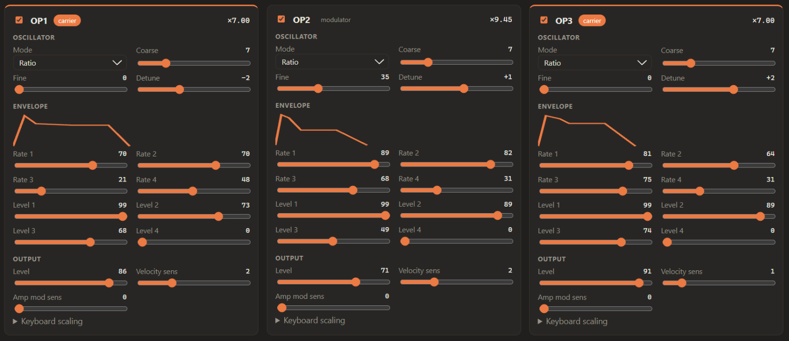

Octo-Vave
by Artificial Music
Every free firmware for the M-VAVE FM-1 in one place: found, ranked, downloaded, checked and played. The orange octopus marks firmware tested on a real FM-1.
by Artificial Music
Every free firmware for the M-VAVE FM-1 in one place: found, ranked, downloaded, checked and played. The orange octopus marks firmware tested on a real FM-1.
 What it does
What it doesOfficial, the community top 10 ranked by stars and downloads, free closed-source projects, and the next 20. Paid firmware is never listed.
Open or closed source, published checksum, one-click revert to stock, and how it installs: web, Python or M-UPGRADE.
Files land in a local library, verified against the SHA256 each project publishes.
Installed, played, Sound-checked and reverted to stock. The exact file tested is pinned by its SHA256.
A key bed modeled on the device, perform and FX controls, a DX7-style voice editor, a patch library and MIDI tools.
A small Python server on 127.0.0.1 and a page in Chrome or Edge. No account, no cloud, nothing to install but Python.
Firmware LeaderboardFree firmware for the FM-1: stock, FM-1 Open and the top community projects, the same cards as the app's Firmware page.
An orange octopus is our stamp of validation: that version was installed, played and reverted to stock on a real FM-1.
Loading the firmware list…
Validated firmwareFrom firmware/validated.json.
A grey octopus means the project has a newer release that hasn't been tested yet.
Got the file somewhere else? Compare its SHA256 with the one below.
| Firmware | Version | Tested | File SHA256 | |
|---|---|---|---|---|
| Loading… | ||||
Tested one yourself? Send a validation report.
Install the Full Featured Appgit clone the repository.python server.py (Windows: double-click start.cmd).http://127.0.0.1:8765, plug in the FM-1, press Connect and allow MIDI + SysEx.Play itPlay and shape the FM-1 from the browser: perform controls and FX, a keyboard, favorite patches and the voice editor. Customize picks what shows.
 Sound check
Sound checkCheck by ear that the firmware on the FM-1 answers MIDI: each step plays a short test and you mark what you heard. Results are kept per firmware.
 Voice design
Voice designThe FM-1 is a six-operator FM synth that speaks the DX7's SysEx. The Voice editor on FM-1 Home lays out a whole DX7 voice, so you can design sounds in the browser and hear every move on the device.

Ratio or fixed frequency, coarse, fine and detune, a four-rate, four-level envelope drawn as you shape it, output level, velocity and mod sensitivity. Switch any operator off to hear the others.
Pick an algorithm and the editor names its carriers, so you know which operators you hear and which ones shape them. Feedback included.
The global pitch envelope, LFO speed, delay, wave and key sync, pitch and amp mod depth, and transpose.
Live send writes each change to the FM-1 as you move it, as a DX7 parameter change (F0 43 10 pp qq vv F7). Send whole voice pushes all 156 parameters at once.
Import any DX7 .syx: a single voice or a 32-voice bank, then pick a voice from the bank. Export yours the same way.
Init, Randomize, then Save to Library with notes and tags. Notes come back with the patch; star it to pin it on FM-1 Home.
DX7-compatible SysEx. The FM-1 doesn't send its current voice back, so the editor starts from INIT or an imported voice. Live send writes each change as you move it. Edits change the active voice; save on the device to keep them there. The voice editor targets the stock firmware; community firmware has its own sound engines.